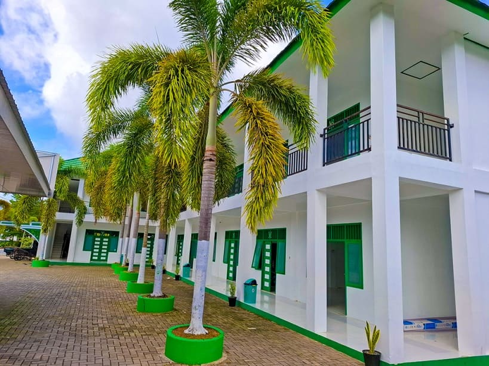
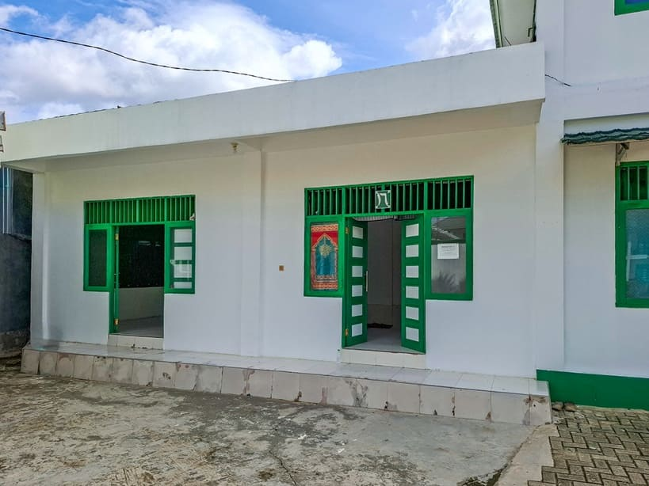
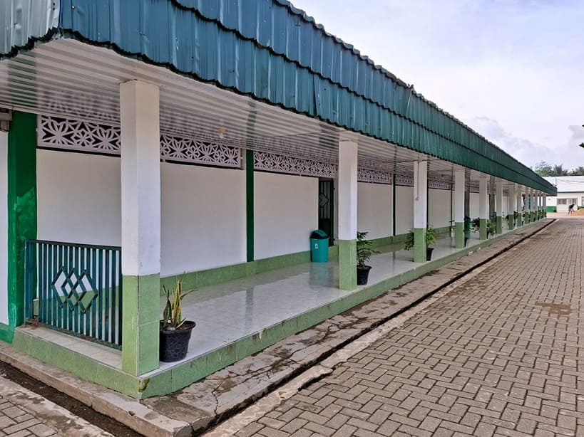
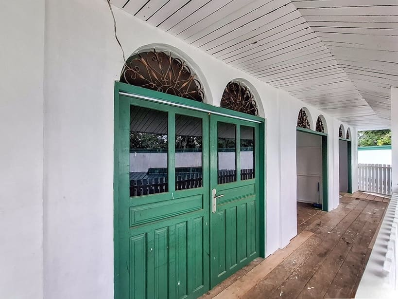

<div id="ajax-page" class="ajax-page-content">
    <div class="ajax-page-wrapper">
        <div class="ajax-page-nav">
            <div class="nav-item ajax-page-prev-next">
                <a class="ajax-page-load" href="Galeri-asrama.html"><i class="lnr lnr-chevron-left"></i></a>
                <a class="ajax-page-load" href="Galeri-taman.html"><i class="lnr lnr-chevron-right"></i></a>
            </div>
            <div class="nav-item ajax-page-close-button">
                <a id="ajax-page-close-button" href="#"><i class="lnr lnr-cross"></i></a>
            </div>
        </div>

        <div class="ajax-page-title">
            <h1>RUANG BELAJAR</h1>
            <h4>Pondok Pesantren Nurul Muhibbin Barabai</h4>
        </div>

        <div class="row">
            <div class="col-sm-8 col-md-8 portfolio-block">

                <div class="owl-carousel portfolio-page-carousel">
                    <div class="item">
                        
                        <p>Ruang kelas No. 1 sampai 15</p>
                    </div>

                    <div class="item">
                        
                        <p>Ruang kelas No. 16</p>
                    </div>

                    <div class="item">
                        
                        <p>Ruang kelas No. 17 sampai 21</p>
                    </div>

                    <div class="item">
                        
                        <p>Ruang kelas di Panti Yatim</p>
                    </div>

                </div>


                <script type="text/javascript">
                    jQuery(document).ready(function($){
                        $('.portfolio-page-carousel').imagesLoaded(function(){
                            $('.portfolio-page-carousel').owlCarousel({
                                smartSpeed:1200,
                                items: 1,
                                loop: true,
                                dots: true,
                                nav: true,
                                navText: false,
                                margin: 10,
                                autoHeight:true
                            });
                        });
                    });
                </script>
            </div>

            <div class="col-sm-4 col-md-4 portfolio-block">
                <!-- Project Description -->
                 
                <div class="project-description">
                    <div class="block-title">
                        <h3>Diskripsi</h3>
                    </div>

                   <style>
                        p  {
                            text-align: justify;
                        }
                        ol {
                            margin: 0 18px;
                        }
                        ul {
                            margin: 0 18px;
                        }
                        li {
                            margin-bottom: 5px;
                        }
                        strong {
                            color: #009a4c;
                        }
                    </style>

                    <p> Jumlah ruang belajar di Pondok Pesantren Nurul Muhibbin Barabai adalah <strong>23 Ruangan</strong> dengan jadwal belajar yang telah diatur oleh para ustadz. </p>
                    <p> Ruang belajar di pondok pesantren adalah tempat yang dirancang untuk mendukung proses pembelajaran santri dengan suasana yang islami dan kondusif. Biasanya, ruang belajar ini terletak di dalam kompleks pesantren, sehingga santri mudah mengaksesnya tanpa harus keluar dari lingkungan pesantren. </p>
                    <p> Ruangan ini sering kali berfungsi ganda, baik untuk kegiatan belajar formal seperti mata pelajaran umum maupun untuk kajian kitab kuning dan ilmu agama. Penataan ruangannya sederhana, tetapi tetap memperhatikan kenyamanan dengan adanya meja, kursi, dan papan tulis sebagai fasilitas utama. </p>
                    <p> Kegiatan belajar di ruang ini berlangsung dengan pendekatan yang memadukan nilai spiritual dan intelektual. Guru atau ustaz memberikan pengajaran dengan metode yang interaktif, sering kali melibatkan diskusi kelompok atau hafalan bersama. Suasana ini menciptakan harmoni antara pencapaian akademik dan pembentukan karakter islami. </p>
                    <p> Dengan demikian, lokal atau ruang belajar di pondok pesantren tidak hanya menjadi tempat untuk menimba ilmu, tetapi juga menjadi pusat pembentukan generasi yang berakhlak mulia dan berdaya saing. </p>

                    <!-- Share Buttons -->
                    <div class="share-buttons">
                        <div class="block-title">
                            <h3>Bagikan</h3>
                        </div>
                        <div class="share-buttons-group">
                            <a href="https://www.facebook.com/share.php?u=psbnmb.ct.ws" target="_blank" class="btn"><i class="fab fa-facebook-f"></i> </a>
                            <a href="#" target="_blank" class="btn"><i class="fab fa-twitter"></i> </a>
                            <a href="#" target="_blank" class="btn"><i class="fab fa-dribbble"></i> </a>
                        </div>
                    </div>
                    <!-- /Share Buttons -->
                </div>
                <!-- Project Description -->
            </div>
        </div>
    </div>
</div>
